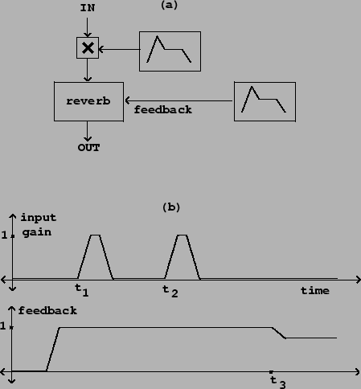

Artificial reverberation is used almost universally in recording or sound reinforcement to sweeten the overall sound. However, and more interestingly, reverberation may be used as a sound source in its own right. The special case of infinite reverberation is useful for grabbing live sounds and extending them in time.
To make this work in practice it is necessary to open the input of the reverberator only for a short period of time, during which the input sound is not varying too rapidly. If an infinite reverberator's input is left open for too long, the sound will collect and quickly become an indecipherable mass. To ``infinitely reverberate" a note of a live instrument, it is best to wait until after the attack portion of the note and then allow perhaps 1/2 second of the note's steady state to enter the reverberator. It is possible to build chords from a monophonic instrument by repeatedly opening the input at different moments of stable pitch.
|  |
Figure 7.16 shows how this can be done in practice. The two most important controls are the reverberator's input and feedback gains. To capture a sound, we set the feedback gain to one (infinite reverberation time) and momentarily open the input at time . To add other sounds to an already held one, we simply reopen the input gain at the appropriate moments (at time in the figure, for example). Finally, we can erase the recirculating sound, thus both fading the output and emptying the reverberator, by setting the feedback gain to a value less than one (as at time ). The further we reduce the feedback gain, the faster the output will decay.